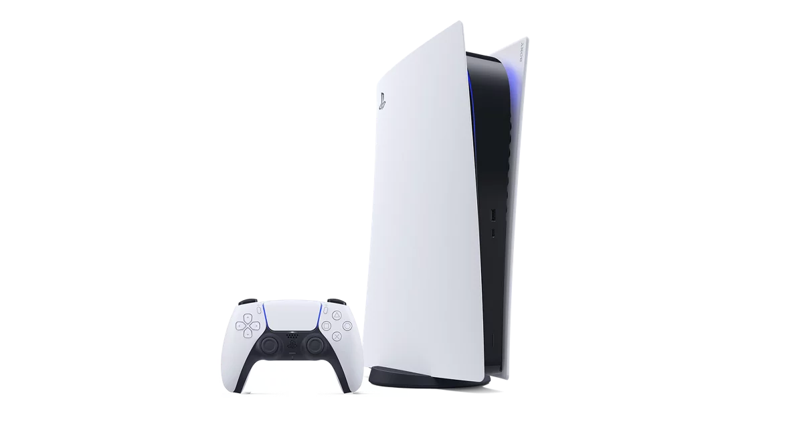
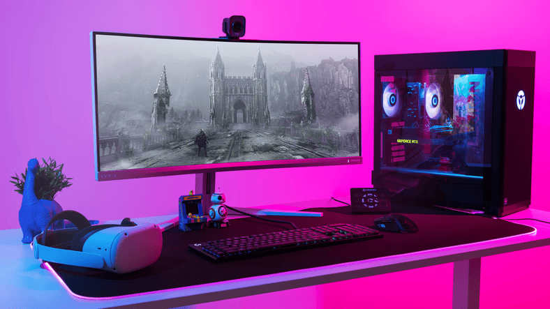

Playstation, Xbox en PC
Playstation
PlayStation is een bekende spelcomputerreeks van Sony. Sinds de eerste PlayStation in de jaren negentig verscheen, heeft het merk een grote invloed gehad op de gamewereld. De consoles brachten steeds krachtigere hardware, nieuwe manieren van spelen en veel bekende games.
Elke generatie bracht verbeteringen op het gebied van beeld, geluid en online spelen. Daardoor konden ontwikkelaars grotere werelden en uitgebreidere spellen maken. PlayStation is voor veel spelers een herkenbaar onderdeel van de gamegeschiedenis.
Xbox
Xbox is het gameplatform van Microsoft. De eerste Xbox verscheen in 2001 en introduceerde onder andere een sterke focus op online gamen. Met Xbox Live konden spelers wereldwijd met elkaar verbinden, samen spelen en hun prestaties delen.
Latere generaties kregen betere prestaties en digitale diensten. Xbox groeide uit tot een belangrijke concurrent van PlayStation en Nintendo. De strijd tussen de verschillende merken zorgde ervoor dat consoles en games bleven vernieuwen.
Persoonlijke computer (PC)
Gamen op de pc bestaat al tientallen jaren. Een pc kan worden aangepast met verschillende onderdelen, zoals een videokaart, processor en werkgeheugen. Hierdoor kunnen spelers hun computer afstemmen op hun eigen wensen.
PC-gaming staat bekend om strategie-, simulatie- en online games, maar vrijwel ieder genre is op de computer te vinden. Spelers gebruiken vaak een toetsenbord en muis, maar een controller is ook mogelijk.